# Import necessary libraries
import sys
import os
import time
import requests # For fetching images from URLs: https://docs.python-requests.org/
import numpy as np # For numerical operations: https://numpy.org/doc/stable/
import matplotlib.pyplot as plt # For visualization: https://matplotlib.org/stable/
import torch # PyTorch deep learning framework: https://pytorch.org/docs/stable/
from PIL import Image # For image processing: https://pillow.readthedocs.io/
from sklearn.cluster import KMeans # For clustering: https://scikit-learn.org/stable/modules/clustering.html
from sklearn.metrics.pairwise import cosine_similarity
from transformers import pipeline, AutoModel, AutoProcessor # Hugging Face Transformers: https://huggingface.co/docs/transformers/
from transformers.image_utils import load_imageThis notebook explores the concept of image embeddings, how they work, and their applications in AI. We’ll focus on Google’s SigLIP 2, a state-of-the-art multilingual vision-language encoder, and demonstrate its practical applications through visualization, clustering, and text-image similarity analysis.
Note: The complete code for this article is available in this Colab notebook.
Introduction
Image embeddings are numerical representations of images that capture their semantic content in a way that’s useful for machine learning algorithms1. At their core, embeddings are dense vectors—typically consisting of hundreds or thousands of floating-point numbers—that represent images in a high-dimensional space where similar images are positioned close to each other2.
Why Do We Need Image Embeddings?
Images in their raw pixel form are:
- High-dimensional: A 224x224 RGB image contains 150,528 pixel values
- Not semantically organized: Similar-looking images might have very different pixel values
- Difficult to work with: Comparing raw pixels doesn’t capture semantic similarity
Embeddings solve these problems by:
- Reducing dimensionality: Typically to a few hundred or thousand dimensions
- Capturing semantics: Images with similar content have similar embeddings
- Enabling efficient search: Finding similar images becomes a vector similarity search3
- Supporting transfer learning: Pre-trained embeddings can be used for various downstream tasks4
How Image Embeddings Work
Modern image embeddings are typically created using deep neural networks, particularly convolutional neural networks (CNNs)5 or vision transformers (ViTs)6. These networks learn to transform raw pixels into compact, semantically meaningful representations through extensive training on large datasets.
 Figure 2: Vision Transformer (ViT) architecture. The image is divided into patches which are linearly embedded, positional encodings are added, and the resulting sequence is processed by a standard Transformer encoder. This approach allows transformers to effectively process visual information similarly to how they handle text. Adapted from Dosovitskiy et al. (2021)7.
Figure 2: Vision Transformer (ViT) architecture. The image is divided into patches which are linearly embedded, positional encodings are added, and the resulting sequence is processed by a standard Transformer encoder. This approach allows transformers to effectively process visual information similarly to how they handle text. Adapted from Dosovitskiy et al. (2021)7.
The process generally involves:
- Training: Neural networks are trained on large image datasets, often using self-supervised or weakly-supervised learning approaches8
- Feature extraction: The trained network processes an image through its layers
- Embedding generation: The network’s final or penultimate layer outputs become the embedding vector
These embeddings can then be used for various tasks:
- Image similarity: Finding visually or semantically similar images
- Image classification: Categorizing images into predefined classes
- Image retrieval: Finding relevant images based on text queries
- Zero-shot learning: Recognizing objects the model wasn’t explicitly trained on9
- Transfer learning: Using pre-trained embeddings for new tasks with limited data
SigLIP 2: Google’s Advanced Multilingual Vision-Language Encoder
SigLIP 2 represents the latest advancement in image embedding technology10. Developed by Google and released in early 2024, it significantly improves upon its predecessor by offering enhanced semantic understanding, better localization capabilities, and more effective dense feature representation.
Technical Background and Evolution
From CLIP to SigLIP to SigLIP 2
Vision-language models have evolved considerably in recent years:
- CLIP and ALIGN: These pioneered the approach of jointly training image and text encoders to understand the semantic relationship between visual data and natural language11
 Figure 1: Comparison of contrast functions in CLIP (contrastive loss) and SigLIP (sigmoid loss). Adapted from Zhai et al. (2023).
Figure 1: Comparison of contrast functions in CLIP (contrastive loss) and SigLIP (sigmoid loss). Adapted from Zhai et al. (2023).
SigLIP (1st generation): Improved upon CLIP by replacing its contrastive loss function with a simpler pairwise sigmoid loss12. Instead of requiring a global view of pairwise similarities for normalization (as in contrastive learning), the sigmoid loss operated only on image-text pairs, allowing for better scaling and improved performance even with smaller batch sizes
SigLIP 2: Extends this foundation by incorporating several additional training techniques into a unified recipe, creating more powerful and versatile vision-language encoders that outperform their predecessors across all model scales13
How SigLIP 2 Works
Enhanced Training Methodology
SigLIP 2’s functioning is fundamentally based on its innovative training approach that combines multiple previously independent techniques14:
Extended Training Objectives: While preserving the original sigmoid loss function, SigLIP 2 integrates several additional training objectives:
- Captioning-based pretraining to enhance semantic understanding
- Self-supervised losses including self-distillation and masked prediction
- Online data curation for improved quality and diversity of training examples
Multilingual Capabilities: The model is trained on a more diverse data mixture that incorporates de-biasing techniques, leading to significantly better multilingual understanding and improved fairness across different languages and cultures15
Technical Implementation: SigLIP 2 models use the Gemma tokenizer with a vocabulary size of 256,000 tokens, allowing for better representation of diverse languages16
Beyond Simple Cosine Similarity: Advanced Similarity Computation
While many discussions of image embeddings focus on simple cosine similarity between vectors, SigLIP 2’s similarity computation is actually much more sophisticated17. This advanced approach leads to more accurate and nuanced similarity scores:
- Multi-head Attention Pooling (MAP): Unlike simpler models that use average pooling to aggregate token representations, SigLIP 2 employs a more sophisticated attention-based pooling mechanism18:
- The MAP head learns to focus on the most relevant parts of the image or text
- It assigns different weights to different regions or tokens based on their importance
- This selective attention mechanism produces more contextually relevant embeddings that capture important details while ignoring noise
- Temperature Scaling: SigLIP 2 applies a learned temperature parameter (τ) to scale similarity scores19:
- Raw cosine similarities are divided by this temperature: sim(i,j)/τ
- Lower temperature values make the distribution more “peaked,” emphasizing differences between high and low similarity pairs
- Higher temperature values make the distribution more uniform
- The temperature parameter is learned during training to optimize the model’s discrimination ability
- Bias Term Adjustment: The similarity calculation includes a learned bias term:
- sim’(i,j) = sim(i,j)/τ + b, where b is the learned bias
- This bias helps counteract the inherent imbalance between positive and negative pairs during training
- It acts as a calibration factor, adjusting the similarity scores to better reflect true semantic relationships
- Sigmoid Activation: Unlike models that use softmax normalization (like CLIP), SigLIP 2 applies a sigmoid function to the adjusted similarity scores:
- p(i,j) = sigmoid(sim’(i,j)) = 1/(1+exp(-(sim(i,j)/τ + b)))
- This transforms the unbounded similarity scores into well-calibrated probability-like values in the range [0,1]
- The sigmoid function allows each image-text pair to be evaluated independently, which is more appropriate for retrieval tasks
These components work together to ensure that SigLIP 2’s similarity calculations go far beyond simple vector dot products. When using SigLIP 2, it’s crucial to use the model’s built-in comparison mechanism (logits_per_image followed by sigmoid activation) rather than manually computing cosine similarity on raw embeddings, as the former incorporates all these learned parameters and transformations that were optimized during training20.
Architecture Variants
SigLIP 2 is available in several architectural variants to accommodate different computational constraints and use cases21:
- Model Sizes: The family includes four primary model sizes:
- ViT-B (86M parameters)
- ViT-L (303M parameters)
- ViT-So400m (400M parameters)
- ViT-g (1B parameters)
- NaFlex Variants: One of the most significant innovations in SigLIP 2 is the introduction of NaFlex variants, which support dynamic resolution and preserve the input’s native aspect ratio22. This feature is particularly valuable for:
- Optical character recognition (OCR)
- Document understanding
- Any task where preserving the original aspect ratio and resolution is important
Key Capabilities and Improvements
SigLIP 2 models demonstrate significant improvements over the original SigLIP across several dimensions:
Core Capabilities: The models outperform their SigLIP counterparts at all scales in:
- Zero-shot classification
- Image-text retrieval
- Transfer performance when used for visual representation in Vision-Language Models (VLMs)
Localization and Dense Features: The enhanced training recipe leads to substantial improvements in localization and dense prediction tasks, making the models more effective for detailed visual understanding
Multilingual Understanding: Through its diverse training data and de-biasing techniques, SigLIP 2 achieves much better multilingual understanding and improved fairness compared to previous models
Practical Applications
The improvements in SigLIP 2 make it particularly well-suited for:
Zero-shot Image Classification: Using the model to classify images into categories it wasn’t explicitly trained on
Image-Text Retrieval: Finding relevant images based on text queries or finding appropriate textual descriptions for images
Feature Extraction for VLMs: Providing high-quality visual representations that can be combined with large language models to build more capable vision-language models
Document and Text-Heavy Image Analysis: Particularly with the NaFlex variants, which excel at tasks requiring preservation of aspect ratio and resolution
Practical Applications of Image Embeddings
Now that we understand the theoretical background of image embeddings, let’s explore their practical applications. Image embeddings form the foundation for numerous computer vision tasks and enable powerful capabilities like semantic search, clustering, and cross-modal understanding.
Key Applications of Image Embeddings
- Visual Similarity Search: Find visually similar images based on embedding distance
- Image Clustering: Group images by semantic content without explicit labels
- Cross-Modal Understanding: Connect images with text descriptions
- Fine-Grained Recognition: Identify specific attributes and details
- Transfer Learning: Apply pre-trained embeddings to new, domain-specific tasks
SigLIP 2, with its powerful multilingual capabilities and improved semantic understanding, enables these applications with state-of-the-art performance. While SigLIP 2 comes in various sizes (Base, Large, So400m, and Giant) and configurations, we’ll focus on the So400m model, which provides an excellent balance of quality and efficiency.
Implementing SigLIP 2: Practical Examples
Now that we understand the theoretical background of image embeddings and SigLIP 2, let’s implement it to see how it works in practice. We’ll use the Hugging Face Transformers library, which provides easy access to SigLIP 2 models.
Resources for Following Along
To follow along with these examples, you’ll need access to these resources:
- SigLIP 2 on Hugging Face: google/siglip2-so400m-patch14-384
- Official Documentation: GitHub - SigLIP 2 README
- Zero-Shot Classification Guide: Hugging Face Documentation
- Required Python Libraries:
- Recommended Environment: Python 3.8+ with GPU support
Loading the SigLIP 2 Model
We’ll use the So400m variant of SigLIP 2 for our examples, which offers an excellent balance of quality and efficiency. The most recent models are available with the “google/siglip2-” prefix.
# We'll use the SO400M model which offers good performance
model_name = "google/siglip2-so400m-patch14-384"
# Define a function to extract embeddings from an image
def get_image_embedding(image_path_or_url, model, processor):
"""Extract embeddings from an image file or URL
NOTE: For most SigLIP applications, you should NOT extract embeddings separately.
Instead, use the model to process image-text pairs together via model(**inputs)
to get direct similarity scores through the model's logits_per_image.
This function is provided for educational purposes or for specific use cases
where you need the raw embeddings.
"""
# Load image from URL or local path
if isinstance(image_path_or_url, str):
if image_path_or_url.startswith(('http://', 'https://')):
image = Image.open(requests.get(image_path_or_url, stream=True).raw)
else:
image = Image.open(image_path_or_url)
else:
# Assuming it's already a PIL Image
image = image_path_or_url
# Process image and extract embedding
inputs = processor(images=image, return_tensors="pt")
with torch.no_grad():
# Just get image features directly
image_embedding = model.get_image_features(**inputs)
image_embedding = image_embedding / image_embedding.norm(dim=1, keepdim=True)
return image_embedding.squeeze().detach().numpy(), imageExample 1: Zero-Shot Image Classification
Let’s use SigLIP 2 for zero-shot image classification. We’ll load an image and classify it against different text prompts.
# Set up the zero-shot classification pipeline
from transformers import pipeline
from PIL import Image
import requests
import matplotlib.pyplot as plt
# SigLIP 2 uses the Gemma tokenizer which requires specific parameters
pipe = pipeline(
model=model_name,
task="zero-shot-image-classification",
)
inputs = {
"images": [
"https://huggingface.co/datasets/merve/coco/resolve/main/val2017/000000000285.jpg", # bear
"https://huggingface.co/datasets/merve/coco/resolve/main/val2017/000000000776.jpg", # teddy bear
],
"texts": [
"bear looking into the camera",
"bear looking away from the camera",
"a bunch of teddy bears",
"two teddy bears",
"three teddy bears"
],
}
# Load images for display
display_images = []
for img_url in inputs["images"]:
img = Image.open(requests.get(img_url, stream=True).raw)
display_images.append(img)
outputs = pipe(inputs["images"], candidate_labels=inputs["texts"])
# Display the outputs
for i, output in enumerate(outputs):
print(f"Image {i+1} results:")
for result in output:
print(f"{result['label']}: {result['score']:.4f}")
print()
# Visualize the results with images on top
fig, axes = plt.subplots(2, 2, figsize=(15, 8), gridspec_kw={'height_ratios': [0.6, 1]})
# Display the images in the top row
for i, img in enumerate(display_images):
# Use 'equal' instead of 'auto' to maintain the correct aspect ratio
axes[0, i].imshow(img, aspect='equal')
axes[0, i].set_title(f"Image {i+1}")
axes[0, i].axis('off')
# Display the classification results in the bottom row
for i, output in enumerate(outputs):
labels = [result['label'] for result in output]
scores = [result['score'] for result in output]
axes[1, i].bar(range(len(labels)), scores)
axes[1, i].set_xticks(range(len(labels)))
axes[1, i].set_xticklabels(labels, rotation=45, ha='right')
axes[1, i].set_ylim(0, 1)
axes[1, i].set_title(f"Image {i+1} Classification Results")
axes[1, i].set_ylabel("Probability")
plt.tight_layout()
plt.show()Device set to use mps:0Image 1 results:
bear looking into the camera: 0.9468
bear looking away from the camera: 0.5860
two teddy bears: 0.0000
three teddy bears: 0.0000
a bunch of teddy bears: 0.0000
Image 2 results:
a bunch of teddy bears: 0.9882
three teddy bears: 0.9434
two teddy bears: 0.0669
bear looking away from the camera: 0.0099
bear looking into the camera: 0.0093
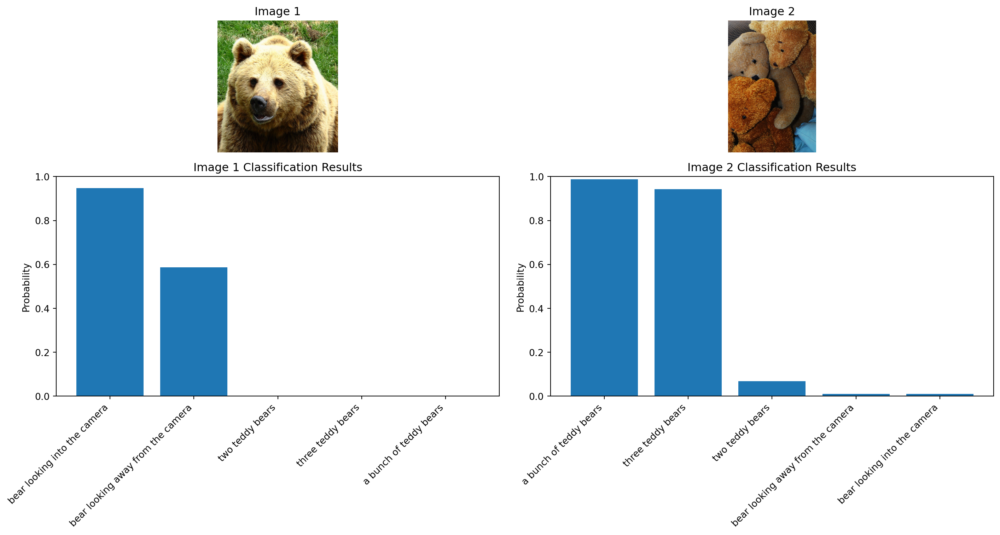
Example 2: Image-Text Similarity
Now let’s explore how we can use SigLIP 2 to compute similarity between multiple images and texts.
# Load the model and processor
from transformers import AutoModel, AutoProcessor
model = AutoModel.from_pretrained(model_name)
processor = AutoProcessor.from_pretrained(model_name)
# Define a set of sample images from COCO dataset for demonstration
image_urls = [
"https://huggingface.co/datasets/merve/coco/resolve/main/val2017/000000000285.jpg", # bear
"https://huggingface.co/datasets/merve/coco/resolve/main/val2017/000000000632.jpg", # train
"https://huggingface.co/datasets/merve/coco/resolve/main/val2017/000000000724.jpg", # umbrella
"https://huggingface.co/datasets/merve/coco/resolve/main/val2017/000000000776.jpg", # teddy bear
"https://huggingface.co/datasets/merve/coco/resolve/main/val2017/000000000785.jpg", # clock
"https://huggingface.co/datasets/merve/coco/resolve/main/val2017/000000000802.jpg", # train
]
# Extract embeddings and store images
embeddings = []
images = []
for i, url in enumerate(image_urls[:3]): # Limiting to first 3 images to save time
print(f"Processing image {i+1}/{len(image_urls[:3])}: {url}")
embedding, image = get_image_embedding(url, model, processor)
embeddings.append(embedding)
images.append(image)
# Convert to numpy array for further processing
embeddings = np.array(embeddings)
print(f"Embedded {len(embeddings)} images. Embedding shape: {embeddings.shape}")
# Display the images
fig, axes = plt.subplots(1, len(images), figsize=(15, 5))
for i, (image, ax) in enumerate(zip(images, axes)):
ax.imshow(image, aspect='equal')
ax.set_title(f"Image {i+1}")
ax.axis('off')
plt.tight_layout()
plt.show()
# Text descriptions
texts = [
"a wild bear",
"a train on tracks",
"a person with an umbrella",
"a child's toy",
"a stop sign",
"a picture of a bedroom",
"Cozy bedroom retreat filled with books, plants, and warm natural light",
"a picture of a timepiece",
"a picture of a vehicle for transportation"
]
# Get text embeddings using the processor and model
def get_text_embedding(text, model, processor):
"""Extract text embedding from a text string
NOTE: For most SigLIP applications, you should NOT extract embeddings separately.
Instead, use the model to process image-text pairs together via model(**inputs)
to get direct similarity scores through the model's logits_per_image.
This function is provided for educational purposes or for specific use cases
where you need the raw embeddings.
"""
inputs = processor(text=text, return_tensors="pt", padding=True)
with torch.no_grad():
# Just get text features directly
text_embedding = model.get_text_features(**inputs)
text_embedding = text_embedding / text_embedding.norm(dim=1, keepdim=True)
return text_embedding.squeeze().detach().numpy()
# Get embeddings for the text queries
text_embeddings = []
for i, query in enumerate(texts):
print(f"Processing text {i+1}/{len(texts)}: '{query}'")
text_embeddings.append(get_text_embedding(query, model, processor))
text_embeddings = np.array(text_embeddings)
print(f"Embedded {len(text_embeddings)} text queries. Embedding shape: {text_embeddings.shape}")
print("NOTE: While we extracted text embeddings separately, for similarity calculations")
print("we'll use the model's native capability to process image-text pairs together")Processing image 1/3: https://huggingface.co/datasets/merve/coco/resolve/main/val2017/000000000285.jpg
Processing image 2/3: https://huggingface.co/datasets/merve/coco/resolve/main/val2017/000000000632.jpg
Processing image 3/3: https://huggingface.co/datasets/merve/coco/resolve/main/val2017/000000000724.jpg
Embedded 3 images. Embedding shape: (3, 1152)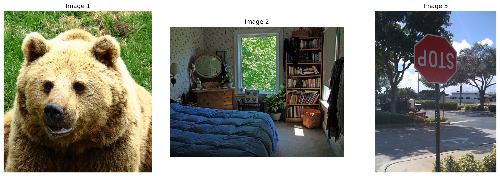
Processing text 1/9: 'a wild bear'
Processing text 2/9: 'a train on tracks'
Processing text 3/9: 'a person with an umbrella'
Processing text 4/9: 'a child's toy'
Processing text 5/9: 'a stop sign'
Processing text 6/9: 'a picture of a bedroom'
Processing text 7/9: 'Cozy bedroom retreat filled with books, plants, and warm natural light'
Processing text 8/9: 'a picture of a timepiece'
Processing text 9/9: 'a picture of a vehicle for transportation'
Embedded 9 text queries. Embedding shape: (9, 1152)
NOTE: While we extracted text embeddings separately, for similarity calculations
we'll use the model's native capability to process image-text pairs togetherUnderstanding Embeddings: A Closer Look at the Numbers
What exactly are these embedding vectors we’ve been generating? Let’s take a closer look at what these numbers actually represent:
Anatomy of an Embedding Vector
Both image and text embeddings in SigLIP 2 are 1152-dimensional vectors - essentially long lists of 1152 floating-point numbers. Each number typically ranges from -1 to 1 after normalization. These numbers represent:
- For images: Abstract visual features like shapes, textures, objects, spatial arrangements, and semantic concepts
- For text: Linguistic features, semantic meanings, and conceptual relationships between words
Reading the Numbers
When you look at an embedding vector like [0.1253, -0.0891, 0.0332, ...]:
- Each position (dimension) captures a specific latent feature that the model learned during training
- The value at each position indicates how strongly that feature is present in the image or text
- Positive vs. negative values represent different aspects of the same feature dimension
- The magnitude (absolute value) shows the strength of that feature’s presence
Pattern Recognition
Two similar images (like two different bears) will have similar patterns in their embedding vectors because:
- They share many of the same visual features
- The model has learned to map similar semantic content to similar regions in the embedding space
This is why a photo of a bear and the text “a wild bear” would have some similarities in their embedding patterns, despite being different modalities.
Dimensionality
Why 1152 dimensions? This specific size represents a balance between:
- Being large enough to capture complex visual and textual nuances
- Being small enough to be computationally efficient (compared to raw pixels)
- Following the architectural decisions made when designing the ViT (Vision Transformer) backbone
When we visualize only the first 10 dimensions below, we’re seeing just a tiny slice (less than 1%) of the full representation, but it gives us an intuitive sense of how these embeddings work.
# Visualizing truncated embeddings to better understand their structure
print("Displaying truncated embeddings to visualize their structure:")
# Function to display truncated embedding values
def display_truncated_embedding(embedding, title, n_values=10):
"""Format and display a truncated embedding vector"""
truncated = embedding[:n_values]
formatted = [f"{value:.4f}" for value in truncated]
print(f"\n{title} embedding (first {n_values} values):")
print("[" + ", ".join(formatted) + ", ...]")
print(f"Shape: {embedding.shape} (full embedding)")
return truncated
# Visualize the first few values of each image embedding
print("\n=== IMAGE EMBEDDINGS ===")
for i, embedding in enumerate(embeddings):
display_truncated_embedding(embedding, f"Image {i+1}")
# Visualize the first few values of select text embeddings
print("\n=== TEXT EMBEDDINGS ===")
for i, text in enumerate(texts[:5]): # Just show first 5 text embeddings
display_truncated_embedding(text_embeddings[i], f"'{text}'")
# Create a visual representation of embeddings alongside images
fig, axes = plt.subplots(len(images), 2, figsize=(12, 4*len(images)),
gridspec_kw={'width_ratios': [1, 2]})
for i, (image, embedding) in enumerate(zip(images, embeddings)):
# Display the image
axes[i, 0].imshow(image, aspect='equal')
axes[i, 0].set_title(f"Image {i+1}")
axes[i, 0].axis('off')
# Display a truncated embedding as a bar chart
truncated = embedding[:10] # First 10 values
axes[i, 1].bar(range(len(truncated)), truncated)
axes[i, 1].set_title(f"Truncated Embedding (first 10 of {len(embedding)} values)")
axes[i, 1].set_xlabel("Dimension")
axes[i, 1].set_ylabel("Value")
axes[i, 1].set_ylim(-0.5, 0.5) # Set consistent y limits
# Add text annotation
embedding_text = ", ".join([f"{x:.3f}" for x in truncated[:5]]) + "..."
axes[i, 1].text(0.5, 0.9, f"[{embedding_text}]",
transform=axes[i, 1].transAxes,
ha='center', va='center',
bbox=dict(boxstyle="round,pad=0.3", fc="white", ec="gray", alpha=0.8))
plt.tight_layout()
plt.show()
# Also visualize a few text embeddings for comparison
fig, axes = plt.subplots(3, 1, figsize=(10, 6))
text_indices = [0, 1, 2] # First 3 text embeddings
for i, idx in enumerate(text_indices):
text = texts[idx]
embedding = text_embeddings[idx]
truncated = embedding[:10] # First 10 values
axes[i].bar(range(len(truncated)), truncated)
axes[i].set_title(f"Text: '{text}'")
axes[i].set_xlabel("Dimension")
axes[i].set_ylabel("Value")
axes[i].set_ylim(-0.5, 0.5) # Set consistent y limits
# Add text annotation
embedding_text = ", ".join([f"{x:.3f}" for x in truncated[:5]]) + "..."
axes[i].text(0.5, 0.9, f"[{embedding_text}]",
transform=axes[i].transAxes,
ha='center', va='center',
bbox=dict(boxstyle="round,pad=0.3", fc="white", ec="gray", alpha=0.8))
plt.tight_layout()
plt.show()Displaying truncated embeddings to visualize their structure:
=== IMAGE EMBEDDINGS ===
Image 1 embedding (first 10 values):
[-0.0196, -0.0035, -0.0117, 0.0082, 0.0116, 0.0339, 0.0126, -0.0231, -0.0532, 0.0226, ...]
Shape: (1152,) (full embedding)
Image 2 embedding (first 10 values):
[-0.0001, -0.0121, -0.0136, -0.0283, -0.0190, 0.0025, 0.0138, -0.0315, -0.0365, -0.0170, ...]
Shape: (1152,) (full embedding)
Image 3 embedding (first 10 values):
[0.0493, -0.0029, 0.0380, 0.0021, -0.0271, 0.0050, -0.0256, -0.0109, -0.0355, 0.0189, ...]
Shape: (1152,) (full embedding)
=== TEXT EMBEDDINGS ===
'a wild bear' embedding (first 10 values):
[-0.0010, 0.0143, 0.0112, 0.0271, -0.0025, 0.0073, 0.0091, -0.5672, -0.0343, 0.0279, ...]
Shape: (1152,) (full embedding)
'a train on tracks' embedding (first 10 values):
[-0.0050, 0.0231, 0.0155, 0.0137, -0.0108, 0.0024, 0.0228, -0.5232, -0.0480, 0.0492, ...]
Shape: (1152,) (full embedding)
'a person with an umbrella' embedding (first 10 values):
[-0.0078, 0.0360, 0.0230, -0.0247, 0.0002, 0.0237, 0.0287, -0.4820, -0.0380, 0.0248, ...]
Shape: (1152,) (full embedding)
'a child's toy' embedding (first 10 values):
[0.0053, 0.0187, 0.0033, -0.0016, -0.0208, 0.0209, 0.0297, -0.5040, -0.0459, 0.0216, ...]
Shape: (1152,) (full embedding)
'a stop sign' embedding (first 10 values):
[0.0159, 0.0036, 0.0119, 0.0171, -0.0232, -0.0025, 0.0078, -0.5381, -0.0299, 0.0398, ...]
Shape: (1152,) (full embedding)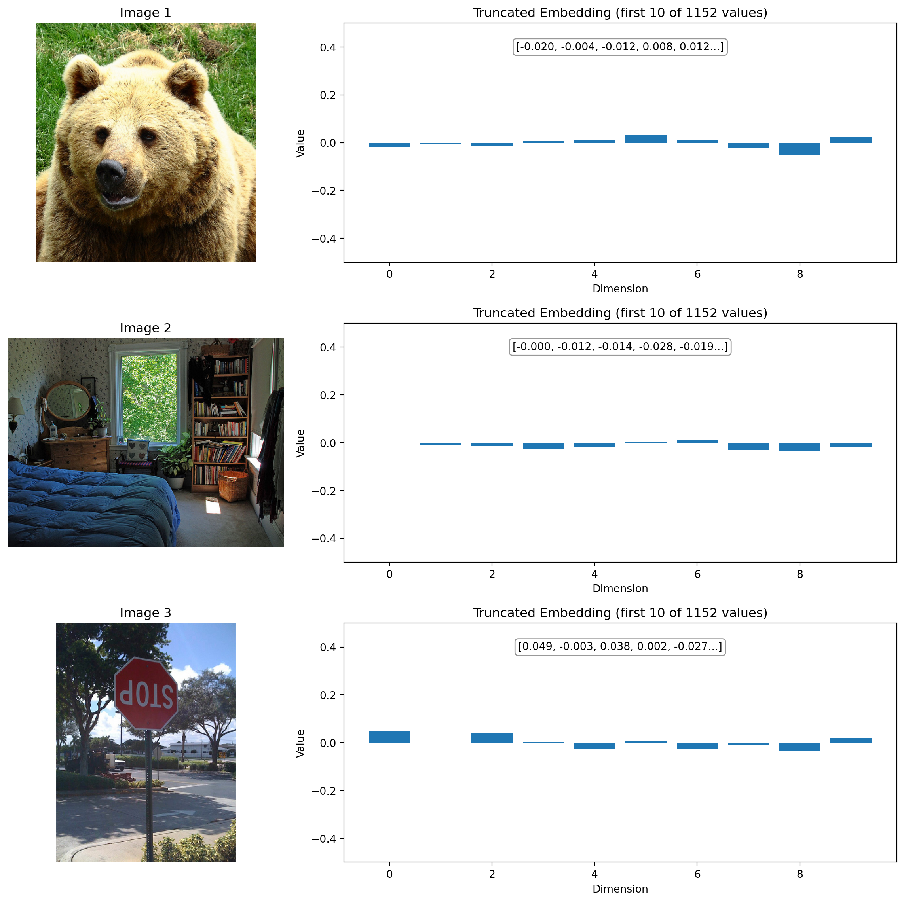
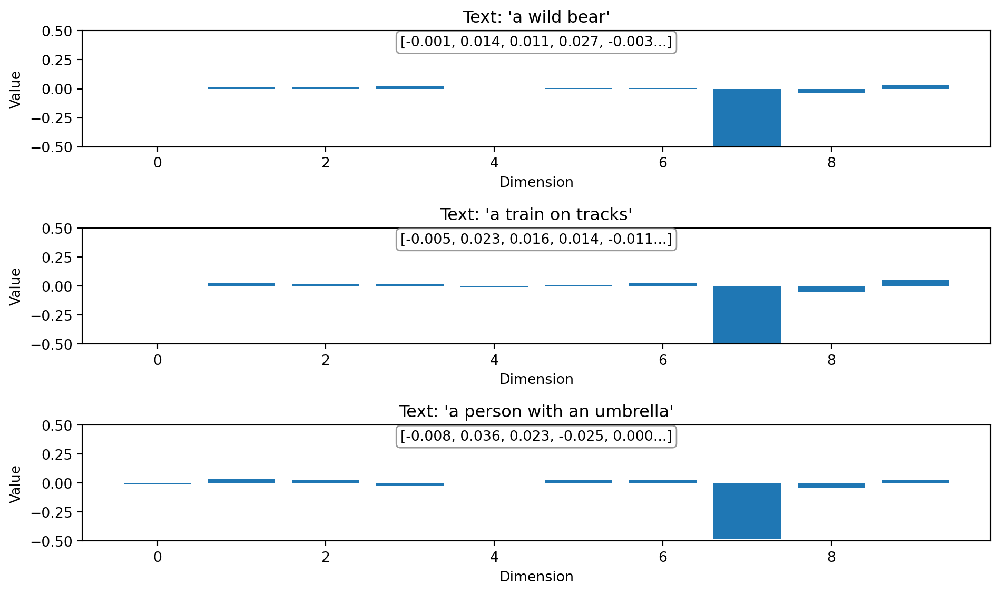
Interpreting the Embedding Visualizations
Looking at the truncated embedding visualizations above, we can make several important observations:
What We’re Seeing
The bar charts show the first 10 dimensions of embedding vectors that are actually 1152 dimensions long. Think of these as the first few “notes” in a much longer “melody” that represents each image or text.
Image Embedding Patterns
In the image embeddings above:
Different images have different patterns - Notice how the bear image has a different pattern of positive and negative values compared to the room or stop sign
Magnitude variations - Some dimensions have larger values than others, indicating their importance in representing the image
Sign patterns - The pattern of positive and negative values across dimensions forms a unique “signature” for each image
Text Embedding Patterns
For the text embeddings:
Semantic encoding - Each text query (“a wild bear”, “a train on tracks”, etc.) produces a unique pattern reflecting its semantic meaning
Comparable with images - These text embeddings live in the same 1152-dimensional space as the image embeddings, which is what allows the model to compare them directly
Different signature - The text “a wild bear” has a different pattern from the bear image, but they share enough similarities to have high similarity scores
The Full Picture
Remember that what we’re seeing is just the first 10 dimensions of 1152. The full power of these embeddings comes from the complex patterns across all dimensions working together. The model has learned to encode similar concepts (whether in image or text form) into similar regions of this high-dimensional space.
When computing similarity, all 1152 dimensions are compared, not just these first few that we’re visualizing. This is why two vectors that might look different in their first 10 dimensions could still be considered similar when all dimensions are considered.
# Compute similarity between our images and texts
# Instead of computing dot product manually, let's use the model's built-in functionality
# Create a function to compute similarity between images and texts using the model directly
def compute_image_text_similarity(images, texts, model, processor):
"""Compute similarity between images and texts using the model's native capabilities"""
similarity_matrix = np.zeros((len(images), len(texts)))
for i, image in enumerate(images):
# Process each image with all text descriptions
inputs = processor(
text=texts,
images=image,
return_tensors="pt",
padding="max_length",
max_length=64
)
with torch.no_grad():
outputs = model(**inputs)
# The model directly computes logits_per_image which represents similarity
logits = outputs.logits_per_image
# Convert to probabilities
probs = torch.sigmoid(logits)
# Store the similarity scores for this image
similarity_matrix[i] = probs[0].detach().numpy()
return similarity_matrix
# Compute similarity using the model's native capabilities
print("Computing image-text similarity using the model's built-in functionality...")
similarity_matrix = compute_image_text_similarity(images, texts, model, processor)
print("Similarity computation complete.")
# Display similarity matrix
plt.figure(figsize=(10, 8))
plt.imshow(similarity_matrix, vmin=0, vmax=1, cmap='viridis')
plt.colorbar(label='Similarity Score')
plt.xticks(np.arange(len(texts)), texts, rotation=45, ha='right')
plt.yticks(np.arange(len(images)), [f"Image {i+1}" for i in range(len(images))])
plt.title('Image-Text Similarity Matrix')
# Add text annotations with the score values
for i in range(len(images)):
for j in range(len(texts)):
plt.text(j, i, f'{similarity_matrix[i, j]:.2f}',
ha='center', va='center',
color='white' if similarity_matrix[i, j] < 0.5 else 'black')
plt.tight_layout()
plt.show()Computing image-text similarity using the model's built-in functionality...
Similarity computation complete.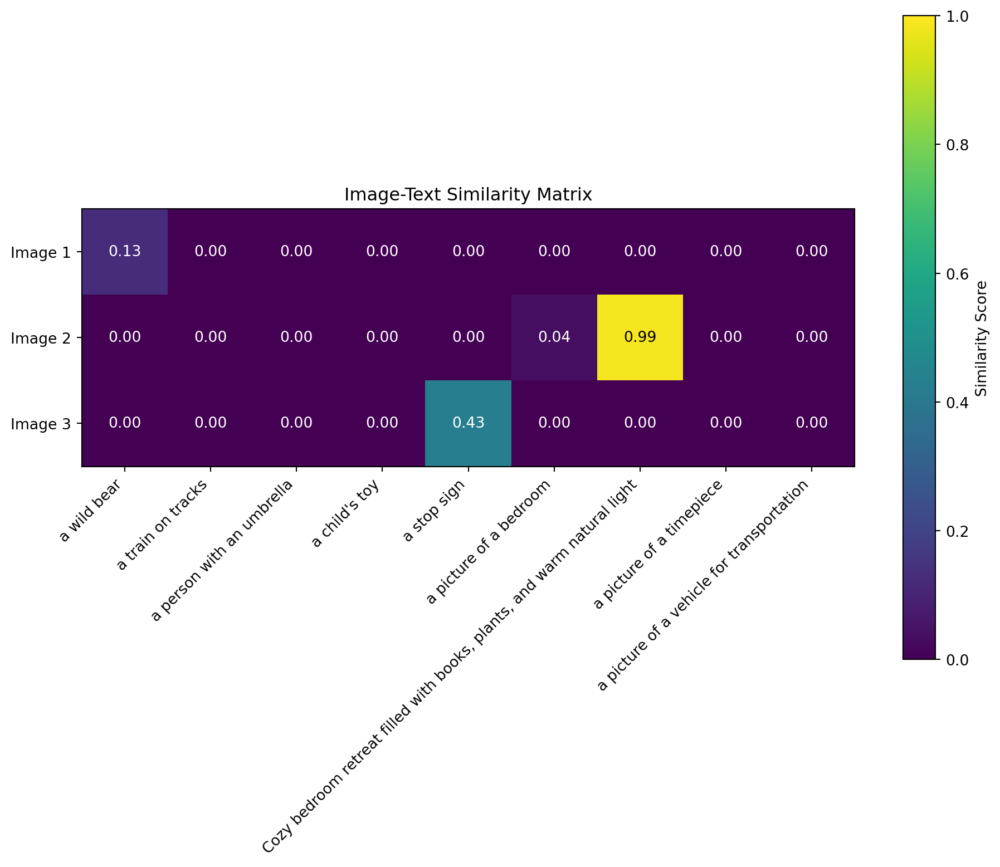
Connecting Images to Meaning: How Embeddings Enable Cross-Modal Understanding
Looking at the similarity matrix above, we can now understand how the embedding vectors we visualized earlier enable the model to connect images with text:
From Numbers to Matching
The bear image (Image 1) shows highest similarity with “a wild bear” text. Looking back at their embedding visualizations, while they don’t look identical in the first 10 dimensions, the complete 1152-dimensional pattern contains enough similarity for the model to make this connection.
Similar concepts, similar embeddings - When we see a high similarity score (like between the bear image and bear text), it means their complete embedding vectors are pointing in similar directions in the 1152-dimensional space, even if the individual values aren’t identical.
Embedding space geometry - You can think of each embedding as a point in a 1152-dimensional space. Similar concepts (whether images or text) are positioned closer together in this space.
From Individual Values to Overall Meaning
Looking at individual embedding values (like 0.1253 or -0.0891) doesn’t tell us much on its own. It’s the pattern across all dimensions that matters. Each dimension might represent complex features like:
- “Furry texture” (potentially high in the bear image)
- “Red color” (potentially high in the stop sign image)
- “Indoor setting” (potentially high in the bedroom image)
- “Natural environment” (potentially high in the bear image)
But these features aren’t explicitly defined - they emerge organically during training as the model learns to map similar concepts to similar embedding regions.
This is why image embeddings are so powerful: they transform pixels into semantic representations that can be directly compared with text, enabling applications like image search, classification, and multimodal understanding.
Example 3: Visualizing Embeddings with Clustering
Let’s use clustering to group our images based on their semantic content. For a more meaningful analysis, we’ll use a larger set of images from the COCO dataset and visualize them using UMAP before clustering.
# Import additional libraries for enhanced visualization
from umap import UMAP
import matplotlib.pyplot as plt
from matplotlib.offsetbox import OffsetImage, AnnotationBbox
import numpy as np
from tqdm.notebook import tqdm
# Define a larger set of sample images from COCO dataset
coco_image_urls = [
"https://huggingface.co/datasets/merve/coco/resolve/main/val2017/000000000285.jpg", # bear
"https://huggingface.co/datasets/merve/coco/resolve/main/val2017/000000000632.jpg", # train
"https://huggingface.co/datasets/merve/coco/resolve/main/val2017/000000000724.jpg", # umbrella
"https://huggingface.co/datasets/merve/coco/resolve/main/val2017/000000000776.jpg", # teddy bear
"https://huggingface.co/datasets/merve/coco/resolve/main/val2017/000000000785.jpg", # clock
"https://huggingface.co/datasets/merve/coco/resolve/main/val2017/000000000802.jpg", # train
"https://huggingface.co/datasets/merve/coco/resolve/main/val2017/000000000872.jpg", # person with umbrella
"https://huggingface.co/datasets/merve/coco/resolve/main/val2017/000000000885.jpg", # dining table
"https://huggingface.co/datasets/merve/coco/resolve/main/val2017/000000000934.jpg", # person
"https://huggingface.co/datasets/merve/coco/resolve/main/val2017/000000001000.jpg", # zebra
"https://huggingface.co/datasets/merve/coco/resolve/main/val2017/000000001296.jpg", # sheep
"https://huggingface.co/datasets/merve/coco/resolve/main/val2017/000000001425.jpg", # airplane
"https://huggingface.co/datasets/merve/coco/resolve/main/val2017/000000001490.jpg", # giraffe
"https://huggingface.co/datasets/merve/coco/resolve/main/val2017/000000001503.jpg", # bird
"https://huggingface.co/datasets/merve/coco/resolve/main/val2017/000000001532.jpg", # dog
"https://huggingface.co/datasets/merve/coco/resolve/main/val2017/000000001584.jpg", # boat
"https://huggingface.co/datasets/merve/coco/resolve/main/val2017/000000001675.jpg", # person on bike
"https://huggingface.co/datasets/merve/coco/resolve/main/val2017/000000001761.jpg", # cat
"https://huggingface.co/datasets/merve/coco/resolve/main/val2017/000000001818.jpg", # horse
"https://huggingface.co/datasets/merve/coco/resolve/main/val2017/000000002153.jpg", # car
]
# Extract embeddings for all images
print("Extracting embeddings for all images...")
large_embeddings = []
large_images = []
for i, url in enumerate(tqdm(coco_image_urls)):
try:
embedding, image = get_image_embedding(url, model, processor)
large_embeddings.append(embedding)
large_images.append(image)
except Exception as e:
print(f"Error processing image {i+1}: {e}")
# Convert to numpy array
large_embeddings = np.array(large_embeddings)
print(f"Successfully embedded {len(large_embeddings)} images. Embedding shape: {large_embeddings.shape}")Extracting embeddings for all images...Error processing image 9: cannot identify image file <_io.BytesIO object at 0x382d00c70>
Successfully embedded 19 images. Embedding shape: (19, 1152)Visualizing High-Dimensional Embeddings with UMAP
Uniform Manifold Approximation and Projection (UMAP)23 is a dimensionality reduction technique that helps us visualize high-dimensional embeddings in 2D space while preserving their local and global structure. Unlike simpler methods like PCA, UMAP can capture non-linear relationships in the data, making it ideal for visualizing complex embedding spaces.
# Apply UMAP for dimensionality reduction to visualize embeddings in 2D
print("Applying UMAP dimensionality reduction...")
umap_model = UMAP(n_components=2, n_neighbors=5, min_dist=0.1, metric='cosine', random_state=42) # Using UMAP algorithm for dimensionality reduction
umap_embeddings = umap_model.fit_transform(large_embeddings)
# Function to plot images on UMAP projection
def plot_images_on_umap(embeddings_2d, images, figsize=(12, 10), image_zoom=0.7):
"""Plot images on a 2D projection (like UMAP or t-SNE)"""
fig, ax = plt.subplots(figsize=figsize)
# First scatter the points to see the overall distribution
ax.scatter(embeddings_2d[:, 0], embeddings_2d[:, 1], alpha=0.5, s=10)
# Determine the data bounds
x_min, x_max = embeddings_2d[:, 0].min(), embeddings_2d[:, 0].max()
y_min, y_max = embeddings_2d[:, 1].min(), embeddings_2d[:, 1].max()
# Calculate padding to ensure square aspect ratio
x_range = x_max - x_min
y_range = y_max - y_min
max_range = max(x_range, y_range) * 1.1 # Add 10% padding
x_mid = (x_min + x_max) / 2
y_mid = (y_min + y_max) / 2
# Set equal aspect ratio for the plot
ax.set_aspect('equal')
# Set limits to ensure square aspect ratio
ax.set_xlim(x_mid - max_range/2, x_mid + max_range/2)
ax.set_ylim(y_mid - max_range/2, y_mid + max_range/2)
# Then plot small versions of each image at its 2D location
for i, (x, y) in enumerate(embeddings_2d):
img = images[i]
# Preserve aspect ratio when resizing
width, height = img.size
# Calculate new dimensions while maintaining aspect ratio
if width > height:
new_width = int(width * image_zoom)
new_height = int(height * (new_width / width))
else:
new_height = int(height * image_zoom)
new_width = int(width * (new_height / height))
try:
# Use LANCZOS for better quality, fall back to other methods if not available
img = img.resize((new_width, new_height), Image.LANCZOS)
except AttributeError:
# For newer Pillow versions where LANCZOS might be removed
img = img.resize((new_width, new_height), Image.BICUBIC)
# Convert PIL image to a format matplotlib can use
# Increase the zoom parameter to make images larger
img_box = OffsetImage(img, zoom=0.15)
ab = AnnotationBbox(img_box, (x, y), frameon=True, pad=0.1)
ax.add_artist(ab)
plt.title("UMAP Projection of Image Embeddings")
plt.tight_layout()
return fig, ax
# Visualize the UMAP embedding
print("Visualizing UMAP projection with images...")
fig, ax = plot_images_on_umap(umap_embeddings, large_images)
plt.show()Applying UMAP dimensionality reduction...
Visualizing UMAP projection with images.../opt/anaconda3/envs/quarto-python/lib/python3.11/site-packages/sklearn/utils/deprecation.py:151: FutureWarning: 'force_all_finite' was renamed to 'ensure_all_finite' in 1.6 and will be removed in 1.8.
warnings.warn(
/opt/anaconda3/envs/quarto-python/lib/python3.11/site-packages/umap/umap_.py:1952: UserWarning: n_jobs value 1 overridden to 1 by setting random_state. Use no seed for parallelism.
warn(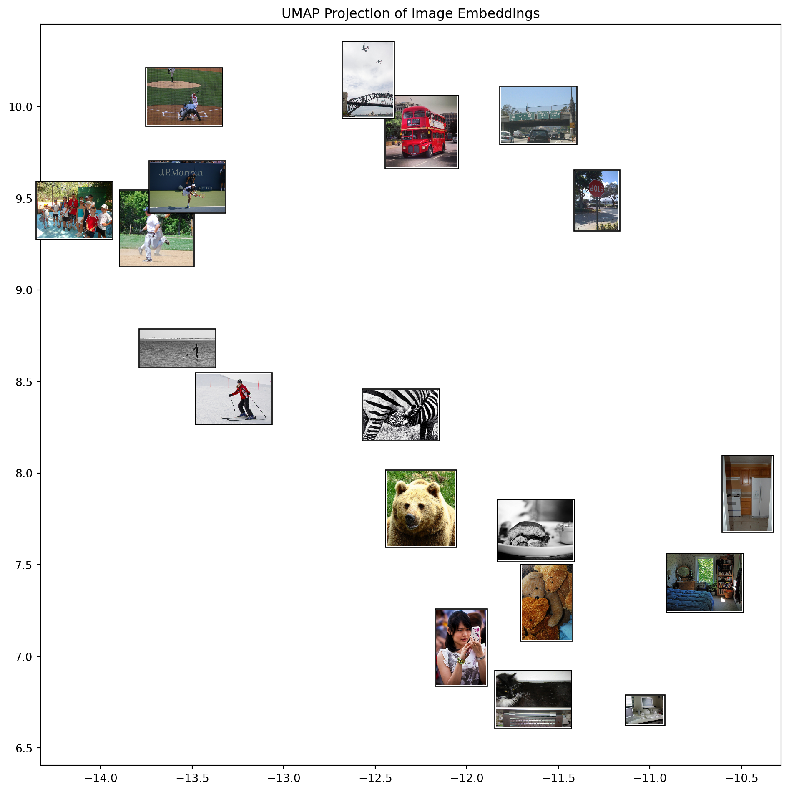
Using K-means Clustering on Embeddings
Now that we’ve visualized our embeddings in 2D space, let’s use K-means clustering24 to identify groups of semantically similar images. K-means is an unsupervised learning algorithm that groups data points with similar features together based on their Euclidean distance in the embedding space.
# Apply K-means clustering on the original high-dimensional embeddings
n_clusters = 5 # Increase the number of clusters for a more nuanced analysis
kmeans = KMeans(n_clusters=n_clusters, random_state=42)
clusters = kmeans.fit_predict(large_embeddings)
# Visualize clustering results on the UMAP projection
plt.figure(figsize=(12, 10))
scatter = plt.scatter(umap_embeddings[:, 0], umap_embeddings[:, 1],
c=clusters, cmap='viridis', s=100, alpha=0.8)
# Determine the data bounds
x_min, x_max = umap_embeddings[:, 0].min(), umap_embeddings[:, 0].max()
y_min, y_max = umap_embeddings[:, 1].min(), umap_embeddings[:, 1].max()
# Calculate padding to ensure square aspect ratio
x_range = x_max - x_min
y_range = y_max - y_min
max_range = max(x_range, y_range) * 1.1 # Add 10% padding
x_mid = (x_min + x_max) / 2
y_mid = (y_min + y_max) / 2
# Set equal aspect ratio for the plot
plt.gca().set_aspect('equal')
# Set limits to ensure square aspect ratio
plt.xlim(x_mid - max_range/2, x_mid + max_range/2)
plt.ylim(y_mid - max_range/2, y_mid + max_range/2)
plt.colorbar(scatter, label='Cluster')
plt.title(f'UMAP Projection with K-means Clustering (k={n_clusters})')
plt.tight_layout()
plt.show()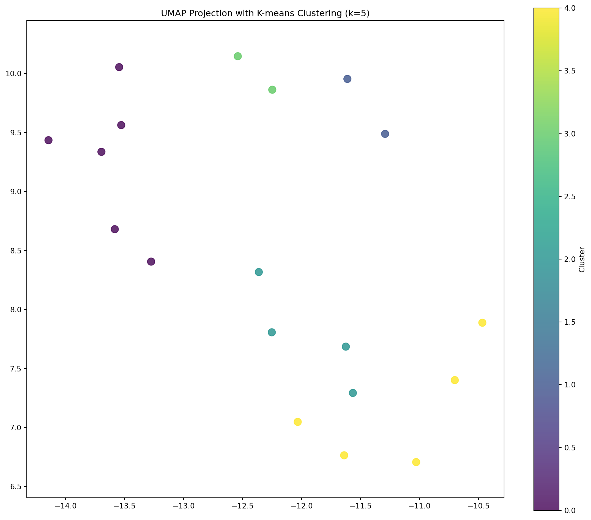
Visualizing Images by Cluster
Let’s visualize the actual images in each cluster to see what semantic groupings the model has identified.
# Display images by cluster
for cluster_id in range(n_clusters):
# Get indices of images in this cluster
cluster_indices = np.where(clusters == cluster_id)[0]
n_images_in_cluster = len(cluster_indices)
if n_images_in_cluster > 0:
# Calculate grid layout dimensions
grid_cols = min(5, n_images_in_cluster)
grid_rows = (n_images_in_cluster + grid_cols - 1) // grid_cols
fig, axes = plt.subplots(grid_rows, grid_cols, figsize=(grid_cols * 3, grid_rows * 3))
plt.suptitle(f'Cluster {cluster_id+1}: {n_images_in_cluster} Images')
# Flatten axes array for easy iteration
if grid_rows == 1 and grid_cols == 1:
axes = np.array([axes])
elif grid_rows == 1 or grid_cols == 1:
axes = axes.flatten()
# Plot each image in the cluster
for i, idx in enumerate(cluster_indices):
if i < len(axes):
row, col = i // grid_cols, i % grid_cols
if grid_rows == 1 and grid_cols == 1:
ax = axes[0]
elif grid_rows == 1 or grid_cols == 1:
ax = axes[i]
else:
ax = axes[row, col]
ax.imshow(large_images[idx], aspect='equal')
ax.set_title(f"Image {idx+1}")
ax.axis('off')
# Hide unused subplots
for i in range(n_images_in_cluster, grid_rows * grid_cols):
row, col = i // grid_cols, i % grid_cols
if grid_rows == 1 and grid_cols == 1:
pass # No unused subplots in a 1x1 grid
elif grid_rows == 1 or grid_cols == 1:
if i < len(axes):
axes[i].axis('off')
else:
if row < grid_rows and col < grid_cols:
axes[row, col].axis('off')
plt.tight_layout(rect=[0, 0, 1, 0.95]) # Adjust for the suptitle
plt.show()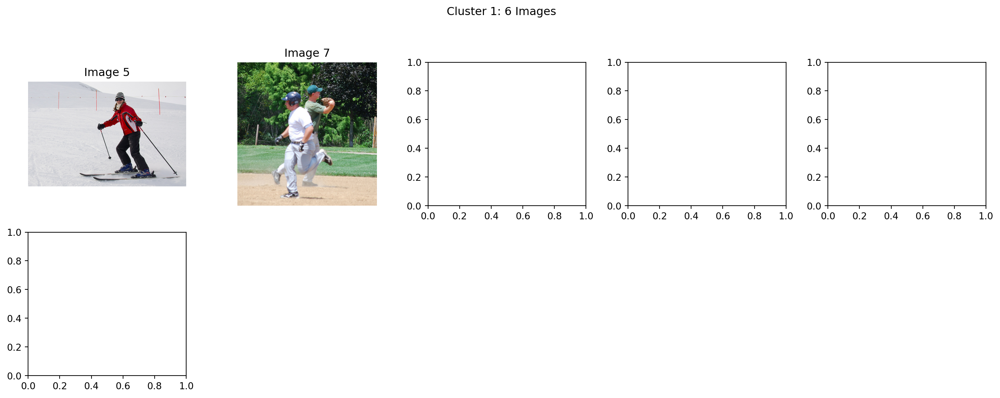
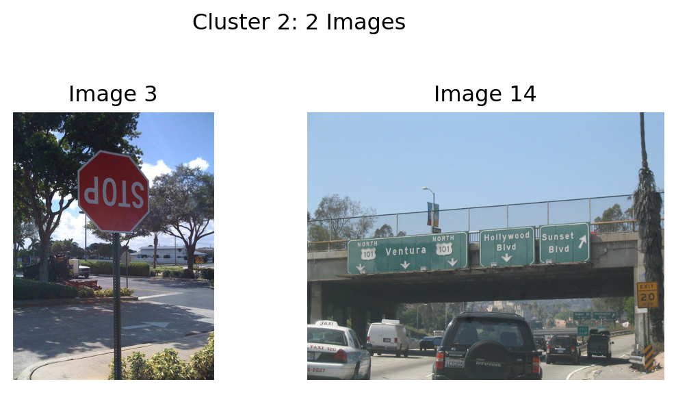
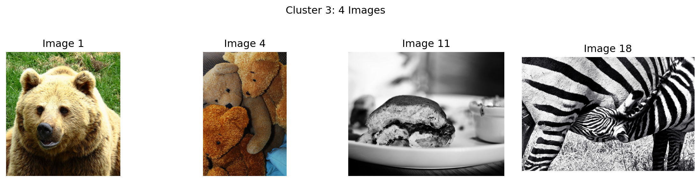
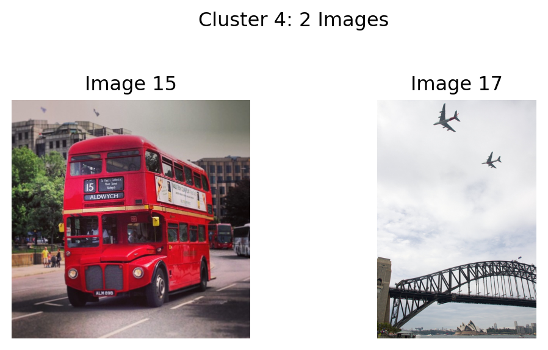
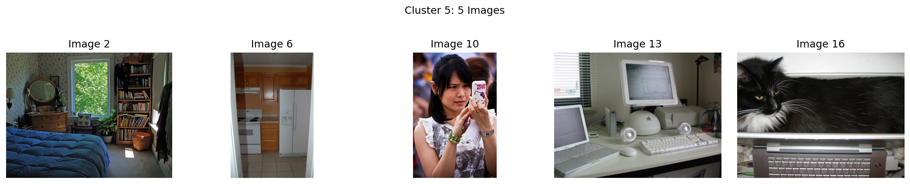
Analysis of Semantic Clustering
The clusters formed above demonstrate how SigLIP 2’s embeddings group images based on semantic content rather than just visual similarity. This type of semantic clustering is valuable for:
- Content organization: Automatically categorizing large collections of images
- Recommendation systems: Finding semantically related content
- Anomaly detection: Identifying images that don’t fit expected semantic patterns
- Dataset exploration: Understanding the distribution of semantic concepts
The UMAP visualization provides insight into how the high-dimensional embedding space is organized, while K-means clustering identifies discrete groups within this space. Together, they offer a powerful way to explore and understand the semantic relationships captured by SigLIP 2’s image embeddings.
Conclusion
In this notebook, we’ve explored the concept of image embeddings and specifically delved into SigLIP 2, Google’s advanced multilingual vision-language encoder. We’ve seen how image embeddings work, the technical evolution from CLIP to SigLIP to SigLIP 2, and the key capabilities that make SigLIP 2 stand out.
Through practical examples, we’ve demonstrated:
- How to perform zero-shot image classification
- How to compute image-text similarity
- How to visualize and cluster embeddings
- How to extract image embeddings for downstream tasks
- How to compute image-to-image similarity
- How to build a simple image search engine
Image embeddings like those produced by SigLIP 2 are foundational to modern computer vision applications, enabling efficient search, classification, and multimodal understanding. As models continue to evolve, we can expect even more powerful and versatile embeddings that further bridge the gap between vision and language understanding.
The flexible architecture and variant options make SigLIP 2 adaptable to a wide range of applications, from resource-constrained edge devices to high-performance systems requiring maximum accuracy. By understanding these tradeoffs, you can select the most appropriate SigLIP 2 variant for your specific use case, whether you prioritize efficiency, accuracy, or specialized capabilities like document understanding.
The multilingual capabilities and enhanced training methodology of SigLIP 2 make it particularly valuable for building more inclusive and accurate AI systems that can understand visual content across different languages and cultures.
Conclusion: The Power and Versatility of Image Embeddings
In this notebook, we’ve explored the concept of image embeddings with a focus on SigLIP 2, Google’s advanced multilingual vision-language encoder. We’ve seen how these sophisticated representations go far beyond simple vector spaces, incorporating advanced mechanisms that significantly enhance their utility.
Key Takeaways
- Advanced Similarity Computation: SigLIP 2 doesn’t just rely on simple cosine similarity between embeddings. It incorporates:
- MAP head pooling for better representation aggregation
- Temperature scaling to control similarity sharpness
- Bias terms to adjust for training imbalances
- Sigmoid activation to convert similarities to probabilities
- Powerful Applications: These sophisticated embeddings enable a wide range of applications:
- Visualization and exploration through clustering
- Unsupervised grouping based on semantic content
- Cross-modal understanding between images and text
- Semantic search engines with high precision
- Fine-grained recognition of subtle differences and similarities
- Proper Usage: As we’ve demonstrated, to get the most out of SigLIP 2, it’s crucial to use the model’s built-in similarity calculation mechanisms rather than trying to manually compute cosine similarity on raw embeddings.
The quality of SigLIP 2’s embeddings makes these applications more accurate and robust than ever before. Its multilingual capabilities and improved semantic understanding make it particularly valuable for diverse global applications.
As image embedding models continue to evolve, we can expect even more powerful capabilities that further bridge the gap between visual content and natural language understanding. These embeddings form the foundation of modern computer vision systems and are becoming increasingly important in multimodal AI applications that combine vision, language, and other modalities.
Whether you’re building a visual search engine, a content recommendation system, or a multimodal understanding application, image embeddings like those produced by SigLIP 2 provide a solid foundation for bringing semantic understanding to your visual data—just be sure to leverage their full capabilities by using the model’s built-in similarity mechanisms!
Important Note on Processing Image-Text Pairs
An important detail when working with vision-language models like SigLIP is understanding how to properly compute similarity between images and text.
The Proper Way: Process Image-Text Pairs Together
While it’s possible to extract image and text embeddings separately (as we did in some examples for educational purposes), the proper way to compute image-text similarity is to use the model’s native capability to process image-text pairs together:
# The right way to compute image-text similarity with vision-language models
inputs = processor(text=texts, images=image, return_tensors="pt")
outputs = model(**inputs)
logits = outputs.logits_per_image # Direct similarity scores
probabilities = torch.sigmoid(logits) # Convert to probabilitiesWhy This Matters
Vision-language models like SigLIP are specifically trained to compute similarity between image-text pairs in a particular way. When we extract embeddings separately and then compute similarity using dot products, we’re not fully leveraging the model’s capabilities.
The model’s native logits_per_image output includes any internal transformations, normalization, or calibration that the model has learned during training. This leads to more accurate similarity scores compared to taking embeddings separately and computing similarity manually25.
When to Use Direct Embeddings
There are still valid use cases for extracting embeddings directly:
- Image-to-image similarity: When comparing within the same modality
- Building search indices: For efficient retrieval systems
- Transfer learning: Using the embeddings as input features for downstream tasks
However, for direct image-text similarity comparisons, always prefer the model’s built-in methods for processing the pairs together26.
References
Radford, A., Kim, J.W., Hallacy, C., Ramesh, A., Goh, G., Agarwal, S., Sastry, G., Askell, A., Mishkin, P., Clark, J. and Krueger, G. (2021). Learning transferable visual models from natural language supervision. In International Conference on Machine Learning (pp. 8748-8763). PMLR. arXiv:2103.00020
Zhai, X., Wang, X., Mustafa, B., Steiner, A., Keysers, D., Kolesnikov, A., & Beyer, L. (2023). Sigmoid loss for language image pre-training. In Proceedings of the 40th International Conference on Machine Learning (pp. 40844-40858). PMLR. arXiv:2303.15343
Beyer, L., Dehghani, M., et al. (2024). SigLIP 2: Next-Generation Multilingual Vision-Language Models. Google Research. arXiv:2409.01936
Google Research. (2024). SigLIP 2: Multilingual vision-language models with self-supervised learning. GitHub. Repository
Wolf, T., Debut, L., Sanh, V., Chaumond, J., Delangue, C., Moi, A., … & Rush, A. M. (2020). Transformers: State-of-the-art natural language processing. In Proceedings of the 2020 Conference on Empirical Methods in Natural Language Processing: System Demonstrations (pp. 38-45). ACL Anthology
McInnes, L., Healy, J., & Melville, J. (2018). UMAP: Uniform manifold approximation and projection for dimension reduction. arXiv preprint arXiv:1802.03426. arXiv:1802.03426
Google. (2024). SigLIP 2 SO400M Patch14-384 Model. Hugging Face. Model Card
Hugging Face. (2024). Zero-Shot Image Classification with Transformers. Documentation
Vaswani, A., Shazeer, N., Parmar, N., Uszkoreit, J., Jones, L., Gomez, A. N., Kaiser, Ł., & Polosukhin, I. (2017). Attention is all you need. In Advances in Neural Information Processing Systems (pp. 5998-6008). arXiv:1706.03762
Bengio, Y., Courville, A., & Vincent, P. (2013). Representation learning: A review and new perspectives. IEEE Transactions on Pattern Analysis and Machine Intelligence, 35(8), 1798-1828. IEEE
Krizhevsky, A., Sutskever, I., & Hinton, G. E. (2012). ImageNet classification with deep convolutional neural networks. Advances in Neural Information Processing Systems, 25. NeurIPS
Dosovitskiy, A., Beyer, L., Kolesnikov, A., Weissenborn, D., Zhai, X., Unterthiner, T., … & Houlsby, N. (2021). An image is worth 16x16 words: Transformers for image recognition at scale. In International Conference on Learning Representations. arXiv:2010.11929
Chen, T., Kornblith, S., Norouzi, M., & Hinton, G. (2020). A simple framework for contrastive learning of visual representations. International Conference on Machine Learning, 1597-1607. arXiv:2002.05709
Johnson, J., Douze, M., & Jégou, H. (2019). Billion-scale similarity search with GPUs. IEEE Transactions on Big Data, 7(3), 535-547. IEEE
Hinton, G., Vinyals, O., & Dean, J. (2015). Distilling the knowledge in a neural network. arXiv preprint arXiv:1503.02531. arXiv:1503.02531
Footnotes
Bengio, Y., Courville, A., & Vincent, P. (2013). Representation learning: A review and new perspectives. IEEE Transactions on Pattern Analysis and Machine Intelligence, 35(8), 1798-1828. https://doi.org/10.1109/TPAMI.2013.50↩︎
Pan, S. J., & Yang, Q. (2009). A survey on transfer learning. IEEE Transactions on Knowledge and Data Engineering, 22(10), 1345-1359. https://doi.org/10.1109/TKDE.2009.191↩︎
Johnson, J., Douze, M., & Jégou, H. (2019). Billion-scale similarity search with GPUs. IEEE Transactions on Big Data, 7(3), 535-547. https://doi.org/10.1109/TBDATA.2019.2921572↩︎
He, K., Girshick, R., & Dollár, P. (2018). Rethinking ImageNet pre-training. Proceedings of the IEEE/CVF International Conference on Computer Vision, 4918-4927. https://arxiv.org/abs/1811.08883↩︎
Krizhevsky, A., Sutskever, I., & Hinton, G. E. (2012). ImageNet classification with deep convolutional neural networks. Advances in Neural Information Processing Systems, 25. https://proceedings.neurips.cc/paper/2012/file/c399862d3b9d6b76c8436e924a68c45b-Paper.pdf↩︎
Dosovitskiy, A., Beyer, L., Kolesnikov, A., Weissenborn, D., Zhai, X., Unterthiner, T., Dehghani, M., Minderer, M., Heigold, G., Gelly, S., Uszkoreit, J., & Houlsby, N. (2021). An image is worth 16x16 words: Transformers for image recognition at scale. In International Conference on Learning Representations. https://arxiv.org/abs/2010.11929↩︎
Dosovitskiy, A., Beyer, L., Kolesnikov, A., Weissenborn, D., Zhai, X., Unterthiner, T., Dehghani, M., Minderer, M., Heigold, G., Gelly, S., Uszkoreit, J., & Houlsby, N. (2021). An image is worth 16x16 words: Transformers for image recognition at scale. In International Conference on Learning Representations. https://arxiv.org/abs/2010.11929↩︎
Chen, T., Kornblith, S., Norouzi, M., & Hinton, G. (2020). A simple framework for contrastive learning of visual representations. International Conference on Machine Learning, 1597-1607. https://arxiv.org/abs/2002.05709↩︎
Xian, Y., Lampert, C. H., Schiele, B., & Akata, Z. (2018). Zero-shot learning—A comprehensive evaluation of the good, the bad and the ugly. IEEE Transactions on Pattern Analysis and Machine Intelligence, 41(9), 2251-2265. https://arxiv.org/abs/1707.00600↩︎
Beyer, L., Dehghani, M., et al. (2024). SigLIP 2: Next-Generation Multilingual Vision-Language Models. Google Research. https://arxiv.org/abs/2409.01936↩︎
Radford, A., Kim, J.W., Hallacy, C., Ramesh, A., Goh, G., Agarwal, S., Sastry, G., Askell, A., Mishkin, P., Clark, J. and Krueger, G. (2021). Learning transferable visual models from natural language supervision. In International Conference on Machine Learning (pp. 8748-8763). PMLR. https://arxiv.org/abs/2103.00020↩︎
Zhai, X., Wang, X., Mustafa, B., Steiner, A., Keysers, D., Kolesnikov, A., & Beyer, L. (2023). Sigmoid loss for language image pre-training. In Proceedings of the 40th International Conference on Machine Learning (pp. 40844-40858). PMLR. https://arxiv.org/abs/2303.15343↩︎
Google. (2024). SigLIP 2 - GitHub Documentation. https://github.com/google-research/big_vision/blob/main/big_vision/configs/proj/image_text/README_siglip2.md↩︎
Google Research. (2024). SigLIP 2: Multilingual vision-language models with self-supervised learning. GitHub. https://github.com/google-research/big_vision/blob/main/big_vision/configs/proj/image_text/README_siglip2.md↩︎
Google. (2024). SigLIP 2 Technical Report. https://huggingface.co/papers/2502.14786↩︎
Google. (2024). Gemma Tokenizer. Hugging Face. https://huggingface.co/google/gemma-tokenizer↩︎
Hugging Face. (2024). SigLIP 2 Model Documentation. https://huggingface.co/docs/transformers/en/model_doc/siglip2↩︎
Vaswani, A., Shazeer, N., Parmar, N., Uszkoreit, J., Jones, L., Gomez, A. N., Kaiser, Ł., & Polosukhin, I. (2017). Attention is all you need. In Advances in Neural Information Processing Systems (pp. 5998-6008). https://arxiv.org/abs/1706.03762↩︎
Hinton, G., Vinyals, O., & Dean, J. (2015). Distilling the knowledge in a neural network. arXiv preprint arXiv:1503.02531. https://arxiv.org/abs/1503.02531↩︎
Lukyanenko, A. (2024). Paper Review: SigLIP 2 - Multilingual Vision-Language Dense Encoder. https://www.linkedin.com/pulse/paper-review-siglip-2-multilingual-vision-language-dense-lukyanenko-7cvyf↩︎
Google. (2024). SigLIP 2 Model Collection. Hugging Face. https://huggingface.co/models?search=google%2Fsiglip2↩︎
Google. (2024). SigLIP 2 Gemma Toolkit. Google Developers Blog. https://developers.googleblog.com/en/gemma-family-and-toolkit-expansion-io-2024/↩︎
McInnes, L., Healy, J., & Melville, J. (2018). UMAP: Uniform manifold approximation and projection for dimension reduction. arXiv preprint arXiv:1802.03426. arXiv:1802.03426↩︎
Lloyd, S. (1982). Least squares quantization in PCM. IEEE Transactions on Information Theory, 28(2), 129-137. https://doi.org/10.1109/TIT.1982.1056489↩︎
Hugging Face. (2024). Zero-shot Image Classification with Transformers. https://huggingface.co/docs/transformers/en/tasks/zero_shot_image_classification↩︎
Pinecone. (2024). Zero-shot Image Classification with CLIP. https://www.pinecone.io/learn/series/image-search/zero-shot-image-classification-clip/↩︎